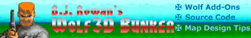

The official home of B.J. Rowan’s Wolf3D creations.
Recently, as it became more likely that I was going to actually resume work on my latest Wolfenstein level design project, Desperate Measures, I decided that building a new online presence was warranted. It made sense to have a place to offer my own custom designs, a site where gamers could “go to the source,” so to speak.
I chose the name “Records Room” because that’s what this place primarily is — a collection of old stuff dating back nearly fifteen years. It’s a room filled with forgotten information, but information that still has value.
You may remember me from such sites as…
This site is preceeded by another, one that I first developed in 1999 as a web design assignment in college, and which I quickly realized might actually be a useful contribution to the Wolfenstein community. That site was B.J. Rowan’s Wolf3D Bunker, a place where I not only offered my own levels for download, but also a number of editing tools, design tips and source code tutorials.

Banner from my old Wolfenstein website.
For the Records Room, I would have simply resurrected my old web address — www.wolf3dbunker.com — but it is no longer in my hands. After turning it over to another member of the Wolfenstein community, it eventually expired. Today it’s owned by one of the web’s many purveyors of scams and search engine stuffing. Ah well, another line-item in the annals of history.
The isolationist manifesto.
When I was running the Wolf3D Bunker, visitor interest soon outstripped the time I had available to support it. Before long, I found myself in over my head. With a torrential flood of email pouring in every day, many of which were requests for my help or contribution to someone else’s Wolfenstein project (several folks even insisted that I design all their levels for them), I soon found it easier to simply ignore it all. Unfortunately, this also meant ignoring further messages from people I had already been working with, and for that I am sorry.
While I’m back online now, I decided upfront that one critical condition of my creating a new site was that I not accept communication, on any subject. Since I don’t have the spare time, it would only be doing everyone a disservice. Rather, I offer the Records Room as a place where you can always find the add-ons I’ve created, tips on my design philosophy, maybe a few extra goodies. And that’s all.
What about this B.J. Rowan guy?
If you want to know more about me, this might help.